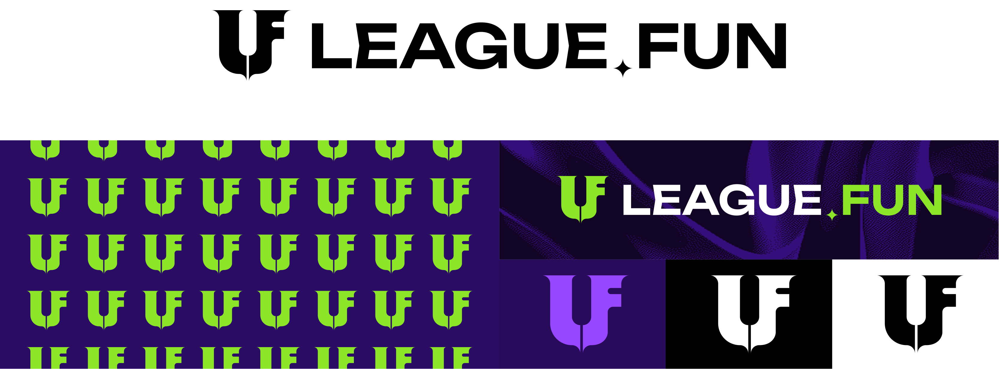
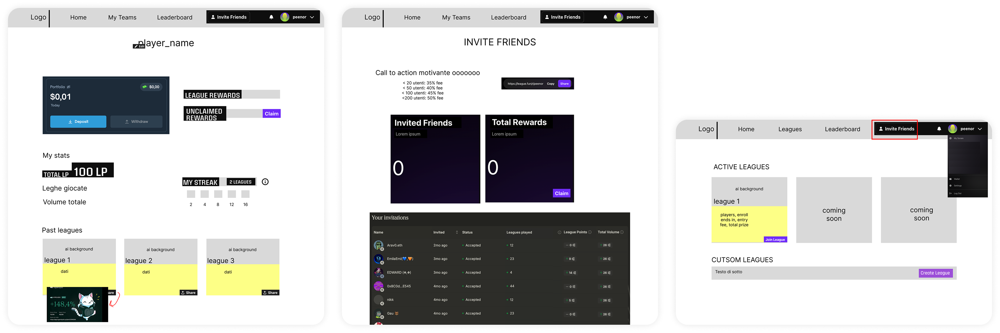
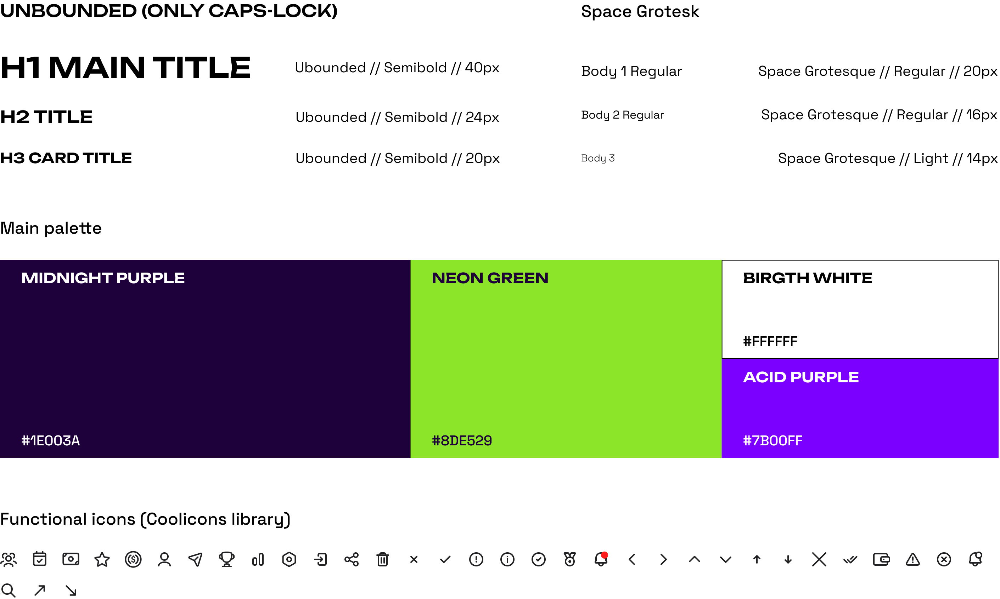
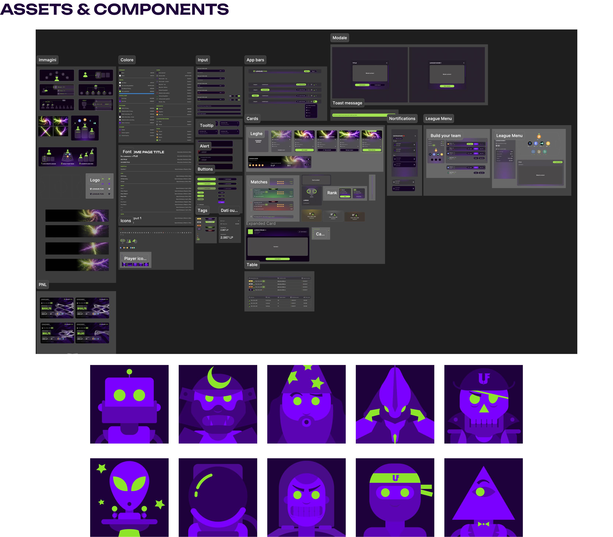
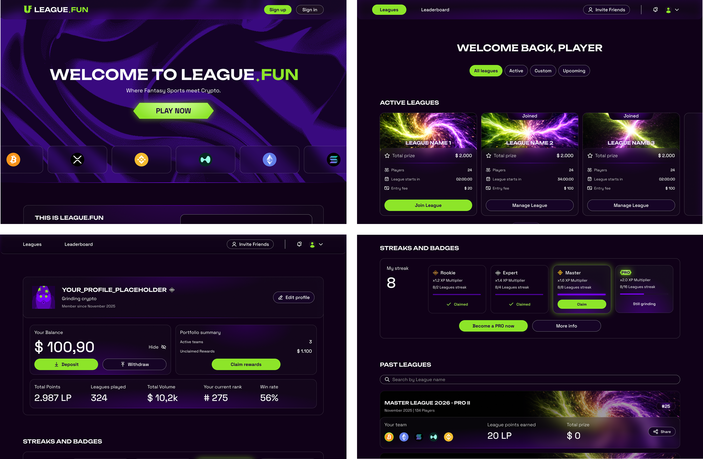
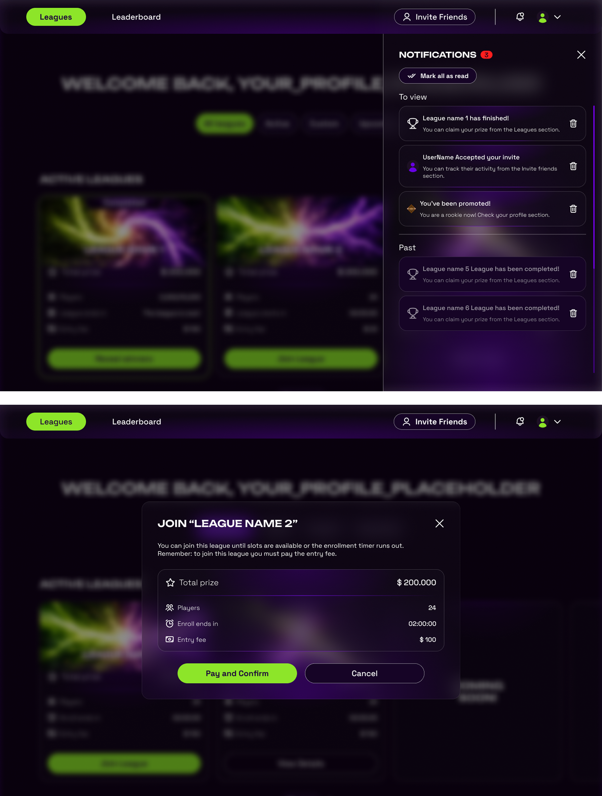
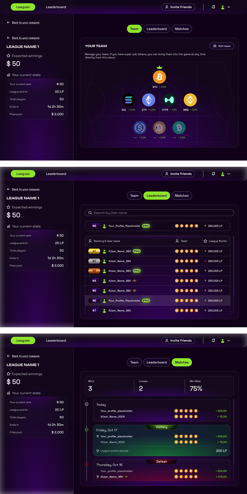

league.fun is a fantasy crypto platform where players can build their own team of cryptocurrencies and compete against other players within leagues. Players with the best-performing teams can win cash prizes based on their results.
As UI Designer, I was responsible for designing the entire visual interface of the platform, from individual components to complete pages and user flows. I developed the visual identity of the website, including the logo, typography, color palette, and graphic treatments such as the glass effect used throughout the interface. I also designed and organized the complete component library and design system in Figma, ensuring consistency across the entire platform.
Deliverable // Crypto fantasy platform pages and design system
Role
UI Design - Visual Identity - Design System - Components
Softwares used
Figma - Blender
Team
Solo project, with Davide Cervetto as supervisor
Media
Website
Methods
Visual research - Moodboarding - Wireframing - UI Design - Design System - Prototyping






